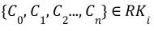
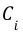
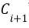

Models package
Graph Modules
- class rktoolkit.models.graph.Edge(u, v, w=1, type=None, attributes={})
For an undirected graph, an unordered pair of nodes that specify a line joining these two nodes are said to form an edge which represents a relationship or dependence between any two nodes. For a directed graph, the edge is an ordered pair of nodes. The terms “arc,” “branch,” “line,” “link,” and “1-simplex” are sometimes used to describe an Edge in Graph Theory.
Refer to this article for more information on Graph Edge.
TODO: Consider moving this to pydantic.
- to_dict()
Returns a tuple of the Edge
TODO: Fix. this should actually be called to_tuple and then TODO: Should also return promoted values
to_dict should send back dictionary in the form of: {
‘u’: a, ‘v’: b, ‘attributes’: c
}
- class rktoolkit.models.graph.Graph(id=None, *args, **kwargs)
Excerpt from initial paper :
It is important to note, that in the field of Graph Theory, the term “graph” does not refer to data charts, such as the likes of line graphs or bar graphs pertaining to the graphical visualization of data. Instead, it refers to a set of Vertices (V) (i.e., points or nodes) and Edges (E) (or lines) that connect the vertices. When any two vertices are joined by more than one edge, then such a graph is called a “Multi-graph”. [11][86] A graph without any loops and with a maximum of one edge between any two vertices is called a simple graph. When each and every vertex of a graph is connected by an edge to every other vertex, then such a graph is called a complete graph. Moreover, it is important to note in the context of this paper, a direction is assigned to each edge of a graph to produce what is known as a Directed Graph or Digraph.[50] We shall be dealing with such Directed Graphs for the remaining part of this paper.
NOT threadsafe
TODO: Add more documentation around usage TODO: More tests coverage
- add_edge(e)
Adds an edge to the graph for the given node. Must be an Edge type to be added successfully.
- Parameters
e (Edge) – Edge node to be added to the graph.
- Raises
ValueError – Raises an error if the input is not of the Edge Type
- add_vertex(n)
Adds a vertex to the graph for the given node. Must be a vertex type to be added successfully.
- Parameters
n (Vertex) – Node vertex to be added to the graph.
- Raises
ValueError – Raises an error if the input is not of the Vertex Type
- edge_distance(G, method='jaccard')
Calculate the edge distances using Jaccard method.
- Parameters
G (Graph) – Graph G whose edge distances to self should be calculated.
method (str, optional) – Method to use for finding edge distance, defaults to “jaccard”
- Raises
ValueError – Raises ValueError when Unknown method is selected to compute distances
- Returns
Jaccard distance for the given graph to self graph.
- Return type
float
- get_children(node_id, recursive=False)
Get the children nodes of the given node.
- Parameters
node_id (str) – ID of the node whose children needs to be found
recursive (bool, optional) – Condition to choose if the child nodes be found recursively till leaf node, defaults to False
- Returns
Returns all nodes reachable from the given node ID.
- Return type
set(recursive) OR list(non-recursive)
- get_signature() str
Determine which distance functions to be used
- Parameters
f (Any) – Distance function to be used.
- Returns
Signature of the distance function to be used
- Return type
str
- get_value_dict(key='value')
- is_connected()
Check if Graph is connected
- Returns
Returns True if the graph is connected, False otherwise.
- Return type
bool
- is_dag()
Check if the graph is a Directed Acyclic Graph
- Returns
Returns True if graph is a DAG, else False
- Return type
bool
- node_distance(G, method='jaccard')
Calculate the node distances using Jaccard method.
- Parameters
G (Graph) – Graph G whose node distances to self should be calculated.
method (str, optional) – Method to use for finding node distance, defaults to “jaccard”
- Raises
ValueError – Raises ValueError when Unknown method is selected to compute distances
- Returns
Jaccard distance for the given graph to self graph.
- Return type
float
- similarity(*args, **kwargs)
Returns the similarity coefficient.
- Returns
Similarity coefficient
- Return type
float
- sort(*args, **kwargs)
Sort the graph in topological order. Uses the
topological_sort()method of NetworkX- Returns
Returns a list of nodes sorted in topological order
- Return type
Generator[Any]
- topological_distance(G, method='jaccard', weights=[0.5, 0.5])
Calculate the topological distance using the edge and node distances generated for the given graph
- Parameters
G (Graph) – Graph whose topological distance should be found
method (str, optional) – Distance method used to find the edge and node distances, defaults to “jaccard”
weights (list, optional) – Weights for the edges and nodes, defaults to [.5,.5]
- Returns
Topological distance for the graph
- Return type
float
- validate()
Validate if the graph is fully connected, if Yes, find the cycles and return True. Else raise exceptions
- Raises
ValueError – Raises ValueError if graph is not connected
ValueError – Raises ValueError if it’s not a DAG
e – Raises exception ‘e’ if cycles can not be found.
- Returns
Returns True if fully connected.
- Return type
bool
- value_distance(G, method='cossine', key='value', fillValue=0)
Value distance compares the distance value of the nodes across the graph, using the method specified.
For example, cossine distance will unravvel the nodes values into an array, and then use the cossine distance to give the final distance
TODO: More methods TODO: Better explanatations of methods TODO: More tests on this
- weighted_distance(G, topological_method='jaccard', value_method='cossine', key='value', weights=[0.5, 0.5])
Computes a hybrid distance between a value and topological distance. Useful for comparing not only the actual value/ magnitudinal distance and similarity, but also the actual distinction in the topological shape of any two graphs.
- class rktoolkit.models.graph.GraphModel(*, nodes: Optional[Node] = [])
The underlying graph model is a relationship of nodes and edges
- class rktoolkit.models.graph.HierarchicalGraph(*, nodes: Optional[Node] = [], root: TreeNode)
A Hierarchical Graph is a subset of the general graph in which all elements are directed and have a dependence relationship such as parent and child which is defined by a particular domain Ontology.
- class rktoolkit.models.graph.HierarchicalTransformGraph(*, nodes: Optional[Node] = [], root: TreeNode)
Heirarchical Transform Graph contains transform functions
- transform(X)
- class rktoolkit.models.graph.Node(*, id: Optional[str] = None, name: Optional[str] = (None,), value: Optional[float] = None, attributes: Optional[dict] = {})
A node represents a distinct object in a graph that has magnitude but no direction and accounts for the quantitative value of a particular property of a variable. A special class of nodes are used in the creation of DAGs (Directed Acyclic Graphs) which have a few unique features beyond that of a normal node, such as checking boundary conditions and an executing function for data transformation which are of interest in the case of building R-K Models.
- attributes: Optional[dict]
- id: Optional[str]
- name: Optional[str]
- value: Optional[float]
- class rktoolkit.models.graph.NodeMask(nmasks=[], emasks=[])
A graph mask is a mask over an existing structural graph. It essentially provides an overlay representation, which can be used to filter out particular nodes and edges. Typically,a mask over a node, should also mask child-nodes associated with it. A node mask represents a masking structure that when applied to a structural graph S, reduces the number of nodes into a subgraph S. Node masks in the R-K Model are binary operators, which when set to true, filter a node and its direct children. To derive the node masks, we produce a set of filters Fn(G), which takes in a graph and returns a mask.
- fit(G)
- get_emasks(n)
- get_nmasks(n)
- class rktoolkit.models.graph.PipelineNode(*, id: Optional[str] = None, name: Optional[str] = (None,), value: Optional[float] = None, attributes: Optional[dict] = {}, parent: Optional[Node] = None, children: Optional[List[Node]] = [], is_root: Optional[bool] = False)
defines a pipeline node
- fit(X, y)
- predict(X)
- class rktoolkit.models.graph.TreeNode(*, id: Optional[str] = None, name: Optional[str] = (None,), value: Optional[float] = None, attributes: Optional[dict] = {}, parent: Optional[Node] = None, children: Optional[List[Node]] = [], is_root: Optional[bool] = False)
-
- get_level()
- is_root: Optional[bool]
- class rktoolkit.models.graph.TreeTransformNode(*, id: ~typing.Optional[str] = None, name: ~typing.Optional[str] = (None, ), value: ~typing.Optional[float] = None, attributes: ~typing.Optional[dict] = {}, parent: ~typing.Optional[~rktoolkit.models.graph.Node] = None, children: ~typing.Optional[~typing.List[~rktoolkit.models.graph.Node]] = [], is_root: ~typing.Optional[bool] = False, transformf: ~typing.Optional[~typing.Callable] = <function TreeTransformNode.<lambda>>, fitf: ~typing.Optional[~typing.Callable] = <function TreeTransformNode.<lambda>>)
- fit(X, y)
- fitf: Optional[Callable]
- transform(X)
- transformf: Optional[Callable]
- class rktoolkit.models.graph.Vertex(id: str, value=None, attributes={})
“Vertex” is a synonym for a node of a graph, i.e., one of the points on which the graph is defined and which may be connected by graph edges. The terms “point,” “junction,” and 0-simplex are also used to describe a Vertex in Graph Theory.
See Here for more information.
NOT threadsafe implementation
TODO: Consider moving this to pydantic.
- add_attribute(v: Any, unsafe=True)
adds an attributes
toggle unsafe to allow keys to be overridden that already exist
- to_dict()
converts to dictionary merging attributes to promoted field and sending back
Linkage functions
- class rktoolkit.models.linkage.LinkageFunction
A linkage function takes in a list of nodes and returns a list of appropriate edges that defines the linkage between those nodes. The math behind the linkage function is defined as follows: If G = (V,E) is an undirected graph without multiple edges or loops. Let n = |V | and e = |E|. The linkage of G is defined to be the maximum min-degree of any of the subgraphs of G (the min-degree of a subgraph is the least degree of any of its vertices; the degree of a vertex is taken relative to the subgraph). The width of G is defined to be the minimum, over all linear orderings of the vertices of G, of the maximum, with respect to any vertex v, of the number of vertices connected with v and preceding it in the linear ordering. It has also been mathematically proven in Topology that the width of a graph is equal to its linkage.
An example of a linker function is provided in the diagram below in the exact way it is applied in an R-K Model. The same linker functions are applied to two different graphs, providing directed edges across leafs.

Functions for Manipulating Models
- class rktoolkit.models.functions.FilterFunction
- filter(X) bool
Predicts the localized position
- Parameters
X (Any) – Matrix X to be localized
- Returns
Returns a bool
- Return type
bool
- fit()
Fits the data
- class rktoolkit.models.functions.LinkageFunction
A linkage function takes in a list of nodes and returns a list of appropriate edges that defines the linkage between those nodes. The math behind the linkage function is defined as follows: If G = (V,E) is an undirected graph without multiple edges or loops. Let n = |V | and e = |E|. The linkage of G is defined to be the maximum min-degree of any of the subgraphs of G (the min-degree of a subgraph is the least degree of any of its vertices; the degree of a vertex is taken relative to the subgraph). The width of G is defined to be the minimum, over all linear orderings of the vertices of G, of the maximum, with respect to any vertex v, of the number of vertices connected with v and preceding it in the linear ordering. It has also been mathematically proven in Topology that the width of a graph is equal to its linkage.
An example of a linker function is provided in the diagram below in the exact way it is applied in an R-K Model. The same linker functions are applied to two different graphs, providing directed edges across leafs.
R-K Model Module
An R-K Model is the fundamental building block of any R-K Diagram. It represents a composite object that can be used to render an R-K Diagram using appropriate filter and linker functions as defined according to the specific use-case. In other words, an R-K Diagram is the rendering of an R-K Model, and the R-K Model serves as the underlying data structure for that render.
All R-K Models must contain the following 3 components:
Structural Graph
Node Masks
Derived Links
Structural Graph
The structural graph (S) is the base graph derived through the Hierarchical Embedding Function, also known as the structural graph. The structural graph provides the baseline ontological structure that forms the basis for all other transformations in the pipeline. Because node masks are reductive operations, the number of nodes in the structural graph represents the maximal number of nodes in the R-K Diagram such that :math: |nodes| ∈ S >= |nodes| ∈ R − K Diagram. The structural graph however does not represent that maximal number of edges. The number of possible edges in the R-K Diagram is bounded by the number of combinations of nodes in the structural graph.
R-K Pipeline Module
An R-K Pipeline is a unidirectional pipeline that builds an R-K Model from an incoming dataset or data stream as a precursor to generate domain specific R-K Diagrams with appropriate “range-filters” and “leaf-linkers’’. An R-K Pipeline, involves the process of transforming an NxM Tensor with 3 or more independent physical/ontological variables into an R-K Model which can then be visualized as an R-K Diagram with the help of domain specific filter and linker functions. At a base level, the R-K Pipeline can be understood as a Directed Acyclic Graph (DAG), which provides transformational components that result in a composite model we call an R-K Model. Transforms in an R-K Pipeline can be chained against each other, as long as egress from one component complies with the ingress specifications from another component. We can mathematically represent this with the following representation:  where  represents a pipeline component and the egress of is compliant with a set of constraints imposed by ‘s ingress. There are a few novel concepts and objects within the pipeline as well as the entire pipeline itself, by virtue of its components and ordering, that provide a novel approach toward topological graph theory and data analysis.
The figure below demonstrates the various steps of an R-K Pipeline w.r.t. the data-flow as shown:

Composed together are the following steps:
Preprocess Steps
Localization Algorithm
Hierarchical Feature Extraction Nodes
Filter Functions
Linkage Functions
Composed together, these independent component modules of the R-K Pipeline can be triggered in sequence to synthesize an R-K Model as a precursor to generating R-K Diagrams.
- class rktoolkit.models.pipeline.RKPipeline(filter_map: dict, linkage_map: dict, structural_graph=None)
Class implementing the R-K Pipeline explained above
- check_valid_node(node) bool
Check if the node is valid or not
- Parameters
node (Any) – Node to be checked
- Returns
Return True if node has value, else False
- Return type
bool
- get_w()
Method to get the vertices and columns (weights) for mapping.
- Returns
Returns both the vertex mapping and columns (weights).
- Return type
tuple[list,list]
- remap(vmap, cols)
Method to Remap the pipeline for the RKModel
- Parameters
vmap (Any) – Vertices Mapping
cols (Any) – Columns for the mapping
- Returns
Returns a remapped R-K Pipeline Class
- Return type